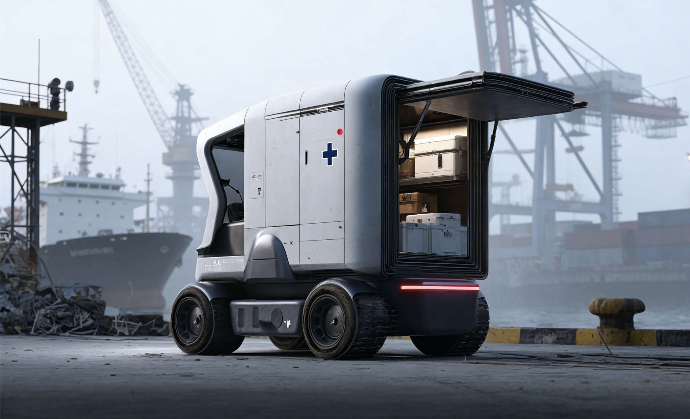
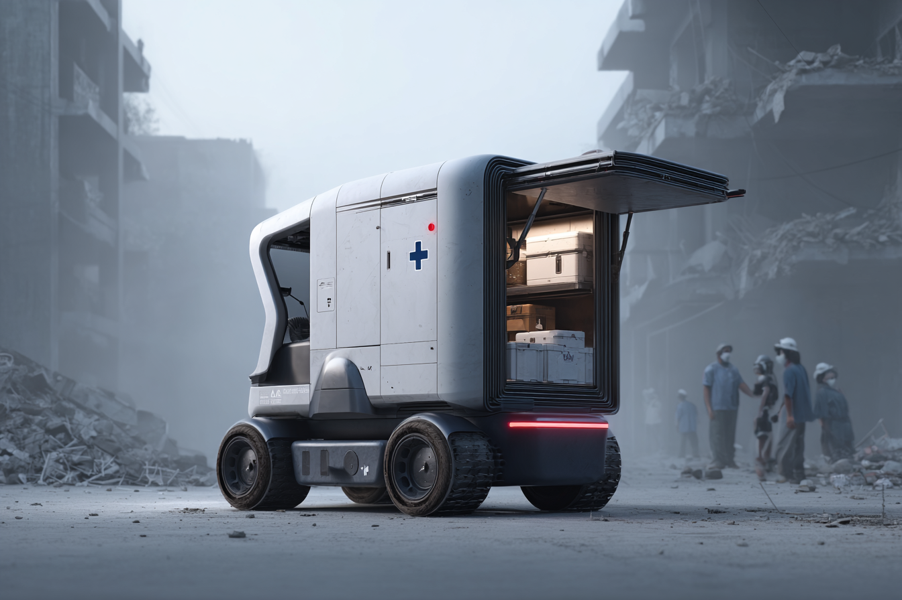
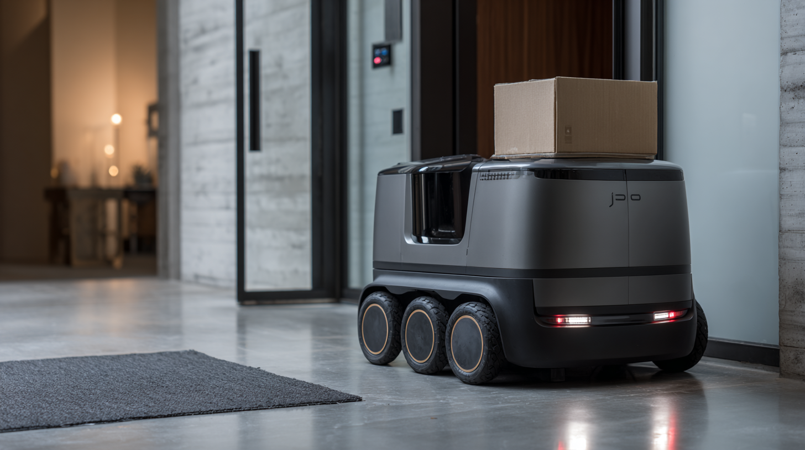
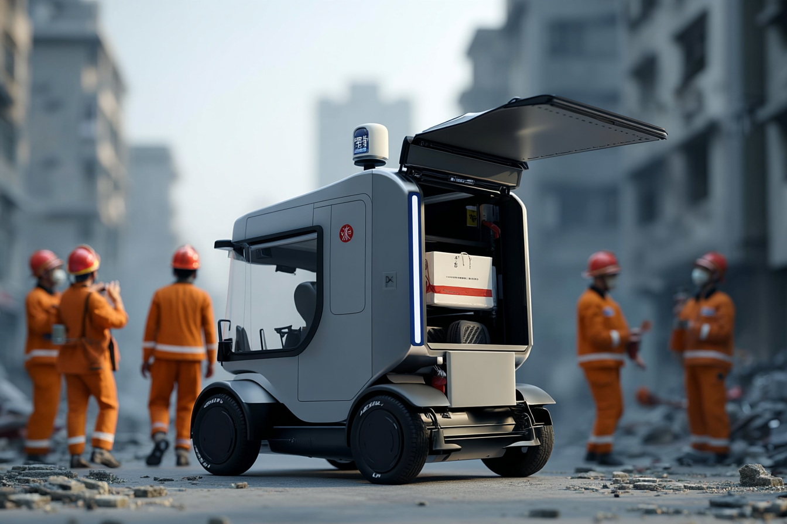
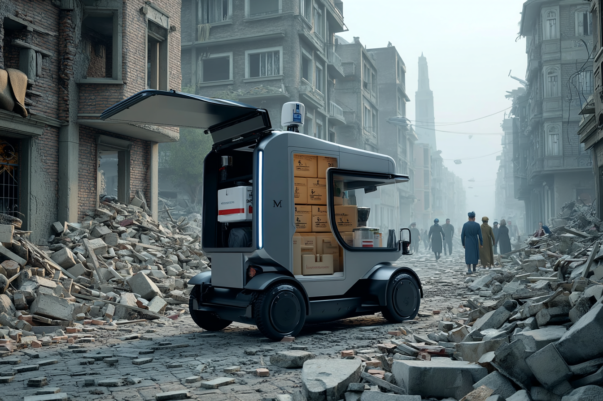
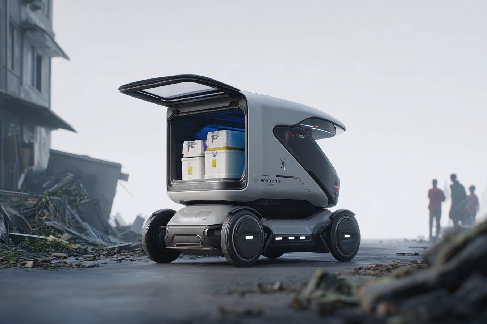
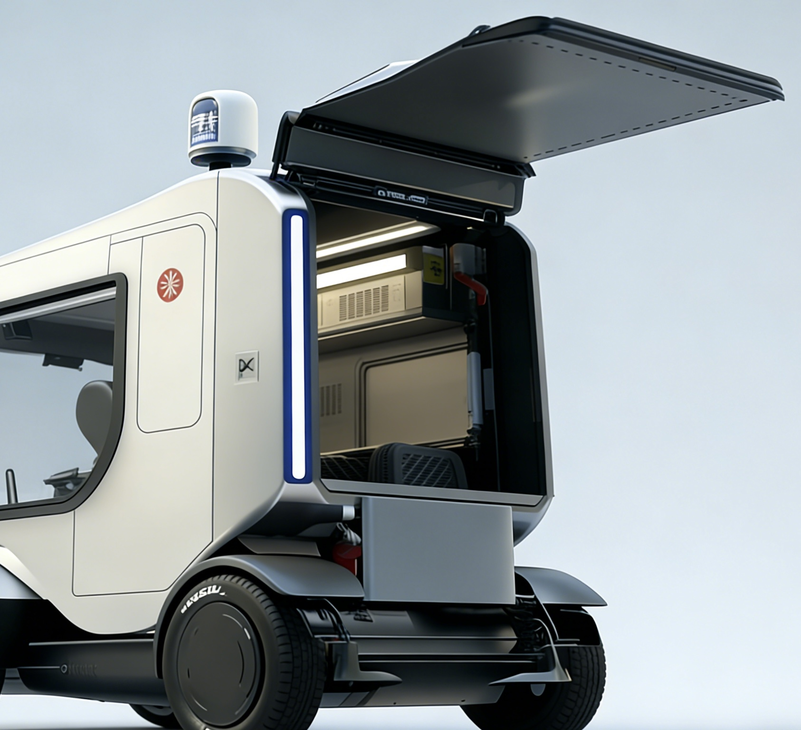

智能与自主
线控底盘 + 自主导航，自主 / 遥控双模式，适配科研多场景。

港口 · 园区 · 仓配中心
Transporte代表着物流运输的未来——智能化、高效化和场景适配在此交融。
它将电动自动驾驶技术与按需调度能力相结合，彻底改变了货物与目的地之间的连接方式。
从繁忙的工业园区到偏远的建筑工地，Transporte将物资、设备和补给直接送达所需之处，
让每一次运输都成为新的效率突破。它不仅仅是一辆运输车，更是一个动态的、数据驱动的物流平台，
重新定义了交付效率，拓展了服务覆盖范围，并为企业与供应链创造了新的价值。






Transporte是一款电动、可自动驾驶的运输车，专为高效配送与灵活调度而设计。从工业园区到建筑工地，从港口枢纽到偏远矿区，它能帮助企业突破传统物流的路径限制，将物资精准送达每一个需要的地方。
Transporte 不仅仅是一辆运输车，它代表着一种科研教育新范式，在这个未来中，智能
底盘、科研实训与教学体验融为一体。
线控底盘 + 自主导航，自主 / 遥控双模式，适配科研多场景。
开放架构、快速改装，适配参数化建模、算法验证等需求。
仿真模拟器 + 实时数据，打造沉浸式科研实训与教学场景。
全链路仿真验证，缩短研发周期，加速科研成果落地。
标准化平台、高复用性，兼顾科研与教学双重降本。